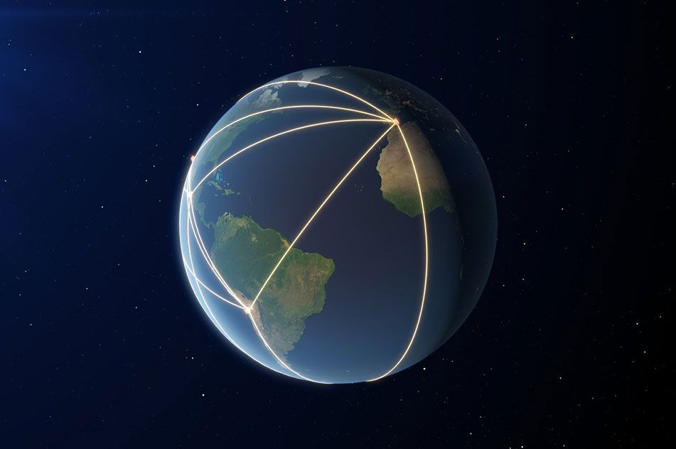

Хар нүхний анхны зургийг хэрхэн авсан бэ?

Хар нүхний анхны зургийг авсан Event Horizon Telescope хэрхэн үүнийг хийж чадсан тухай мэдээллийг хүргэж байна.Нэлээдгүй ярвигтай сэдэв учраас олон мэдээлэлтэй танилцах шаардлагатай боллоо. Их урт нийтлэл болсон ч та бүхэн бүгдийг нь уншина гэж найдаж байна.
Эхлээд бид зураг дээр яг юуг харсан болохыг товч тайлбарлая. Бид хар нүхний тухай өмнөх нийтлэлүүдээрээ үйл явдлын хаяавчийн тухай тайлбарласан. Харин үйл явдлын хаяавчнаас гадагш асар их халуун хийнээс бүрэлдсэн диск оршдог. Хар нүхний татах хүчний нөлөөлөлд орсон хий асар их хурдтайгаар (гэрлийн хурдны 40 орчим хувьтай тэнцүү хурдаар) эргэлдсэнээр үүсдэг энэ бүтцийг accretion диск гэж нэрлэдэг. Өөрөөр хэлбэл хөдөлгөөний энерги нь дулааны энерги болж хувирч байгаа гэсэн үг.
Энэ эргэлдсэн халуун хийн зарим хэсэг нь хар нүх рүү орох ч ихэнх нь хар нүхний эргэн тойронд эргэлдсээр, үйл явдлын хаяавчтай давхацдаггүй. Аccretion дискээс дотогш бас нэгэн тойрог байгаа бөгөөд гэрлээс бүтсэн энэ бүтцийг фотон тойрог гэдэг. Гэрэл массгүй болохоор үйл явдлын хаяавчтай хамгийн ойрхон эргэлдэж чаддаг. Эргээд хар нүхний тухай үндсэн ойлголтоо бодвол бид хар нүхийг харахын тулд ямар нэг байдлаар үйл явдлын хаяавч дотор орчхоогүй гэрлийг л хайх хэрэгтэй болно.

Гэтэл хар нүх эргэн тойрны орон зай-цаг хугацааны хавтгайг мурийлгадаг учраас үйл явдлын хаяавчнаас хамаагүй наана буюу өнөөх фотон тойргийг шүргээд өнгөрсөн гэрэл ч орон зайн хотгор гүдгэрээс болж мурийж, хар нүхний дотор орчихдог. Харин үйл явдлын хаяавчнаас яг 2.6 rs зайд туссан гэрэл фотон тойргийг дөнгөж шүргээд өнгөрөх бөгөөд тэр гэрлийн үүсгэсэн сүүдэр нь зураг дээр бидний харж байгаа хар сүүдэр юм.
Тэр хар сүүдэр нь үйл явдлын хаяавч биш, түүнээс 2.6 дахин том дүрс болно. Гэрэл мурийлттай байгаа учраас бид энэ жижигхэн хар сүүдэр дотроос үйл явдлын хаяавчийн бүх талыг нь харж чадна гэсэн үг. (Тэнд зогсож байгаад чигээрээ харвал та шилэн хүзүүгээ харж болно. Гэрлийн мурийлт нь тийм хачирхалтай.) Сүүдрээс гадагш байх гэрлүүдийн хамгийн дотор талынх нь фотоны тойрог, түүнээс гадагших accretion диск болно. (EHT team-ийн мэдэгдлийг сонсож байхад зөвхөн accretion дискнээс гадна бас accretion дисктэй перпиндикуляр орших цацралуудаас зураглалыг хийсэн гэж байсан.)
Одоо харин телескоп маань хэрхэн "ажилласан" болохыг тайлбарлая. Хар нүх хэдийгээр асар их масстай хэдий ч түүнтэйгээ харьцуулахад бага орон зайг эзэлдэг. Хар нүхийг дэлхийгээс харна гэдэг Нью-Йорк хотод зогсож байгаад Лос-Анжелест байх гольфийн бөмбөгний дээрх цэгийг харахтай ижил ажээ. Ийм асар их томруулалтыг хийхийн тулд бидэнд зөвхөн дэлхий шиг хэмжээтэй телескоп л хэрэгтэй. Гэвч яаж дэлхий шиг хэмжээтэй телескоп барих билээ, тэрний оронд одон орончид дэлхий даяар тархаж байрласан хэд хэдэн телескопыг зэрэг ажиллуулж дүрсийг гаргаж авсан юм.
Өмнөд туйл, Чили, Аризона гэх мэт дэлхий даяар байршилтай радио телескопуудыг тус бүрээр нь толь болгон ашиглаж, яг зэрэг, ижил хугацаанд, ямар нэгэн гадны нөлөөгүйгээр тэднээс цугласан мэдээллийг нэг цэгт цуглуулж харснаар уг зургийг авсан байна. Жирийн толин телескоп гэрлийг олон цэг дээрээс ойлгож, нэг цэгт фокуслуулаад дүрс үүсгэдэг шиг эдгээр телескопуудыг хооронд нь тохируулжээ. Барзгар гадаргуутай толинд туссан гэрэл нэг цэгт фокуслахгүйтэй адил нэг секунд л алдахад зурагны нарийвчлал буруу гарна. Үүнээс сэргийлэхийн тулд атомын цаг, бусад нарийн төхөөрөмжүүдийг телескопуудад суулгажээ. Эдгээр атомын цагууд нь 10 сая жилд 1 секунд алдаж хэмждэг маш нарийвчлалтай.
Бас цуглуулж буй радио долгион нь усны ууранд хамгийн их шингэдэг учраас хамгийн хуурай газруудад байршсан байхаар телескопуудыг сонгосон гэж байв. Ингэж л бид дэлхий шиг хэмжээтэй телескопыг ашиглаад өнөөх харанхуйн хөлөг баатрынхаа зургийг авч чадсан байна даа.
|